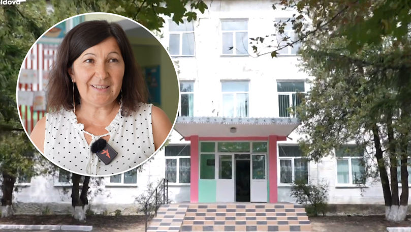

Școala din Teșcureni reprezintă nu doar un centru educațional, ci și o făclie a luminii înțelegerii și dezvoltării în această comunitate rurală. Prin eforturile constante ale educatorilor și angajamentul elevilor, școala devine nu doar un loc de învățare, ci și o sursă de inspirație pentru viitorul satului.
Primul aspect care se evidențiază este rolul său în formarea tinerei generații. Educația devine un far călăuzitor, iar școala din Teșcureni își asumă misiunea de a oferi nu doar cunoștințe, ci și valori fundamentale. Elevii devin nu doar receptori ai informațiilor, ci și constructori ai unui caracter solid și responsabil.
Școala devine centrul vieții sociale și culturale în comunitate. Evenimentele școlare, precum spectacolele, concursurile și activitățile artistice, aduc locuitorii împreună într-un cadru festiv și educativ. Această interacțiune socială contribuie la formarea unei comunități strânse și la păstrarea tradițiilor locale.
Un alt aspect notabil este adaptabilitatea școlii la schimbările din societate. Cu tehnologia în avans constant, școala din Teșcureni nu rămâne în urmă, ci integrează noile metode de predare și învățare. Elevii beneficiază de acces la resurse moderne, pregătindu-se pentru provocările secolului XXI.
Colaborarea strânsă între școală și comunitatea locală reprezintă un alt element esențial. Proiecte și inițiative comunitare își găsesc rădăcinile în școală, iar implicarea părinților și a altor membri ai comunității consolidează legăturile dintre educație și viața cotidiană.
În concluzie, școala din Teșcureni nu este doar un loc de predare, ci un centru dinamic care luminează calea spre cunoaștere și dezvoltare. Prin formarea noilor generații, prin activitățile sociale și culturale, prin adaptabilitate și colaborare, școala devine un factor cheie în construirea unui viitor solid și luminos pentru întreaga comunitate.
